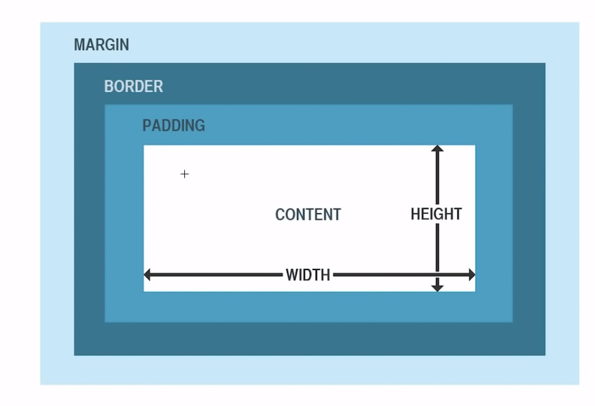

Box model
trang box block
Định nghĩa:
Box Model : là kỹ thuật tinh chỉnh lại các phần tử box(block)
Trong Bõ có 4 thành phần chính:
- Margin : - Lề ngoài của box
- Border : - Viền của box
- Padding : - Phần lót bên trong box ngăn cách vói nội dung(content)
- Content : - Phần nội dung của box

Margin: gía trị
4 cạnh bằng nhau: margin: 15px
4 cạnh khác nhau: margin: 15px 15px 20px 20px (thứ tự margin: top - right - bot - left .)
1 trong 4 cạnh: Margin-top/bot/right/left:15px( giá trị )
Border: giá trị + loại viền + màu
- Giá trị : PX / pt / em/ rem
- Loại viền : Solid: Bình thường
--------------- Dotted: VIền chấm
--------------- Double: 2 viền
--------------- groove: hình khốilồi
--------------- ridge: hình khối lõm
--------------- inset: hình lõm
--------------- outset: hình lồi
Padding : viền trong văn bản
padding: gia trị (không thêm màu đc)
Box 1.border :solid.
Box 2 border:dotted
Box 3.border:double
Box 4.border:groove
Box 5.border:ridge
Box 6.border:inset
Box 7.border:uotset
Tùy biến border moder